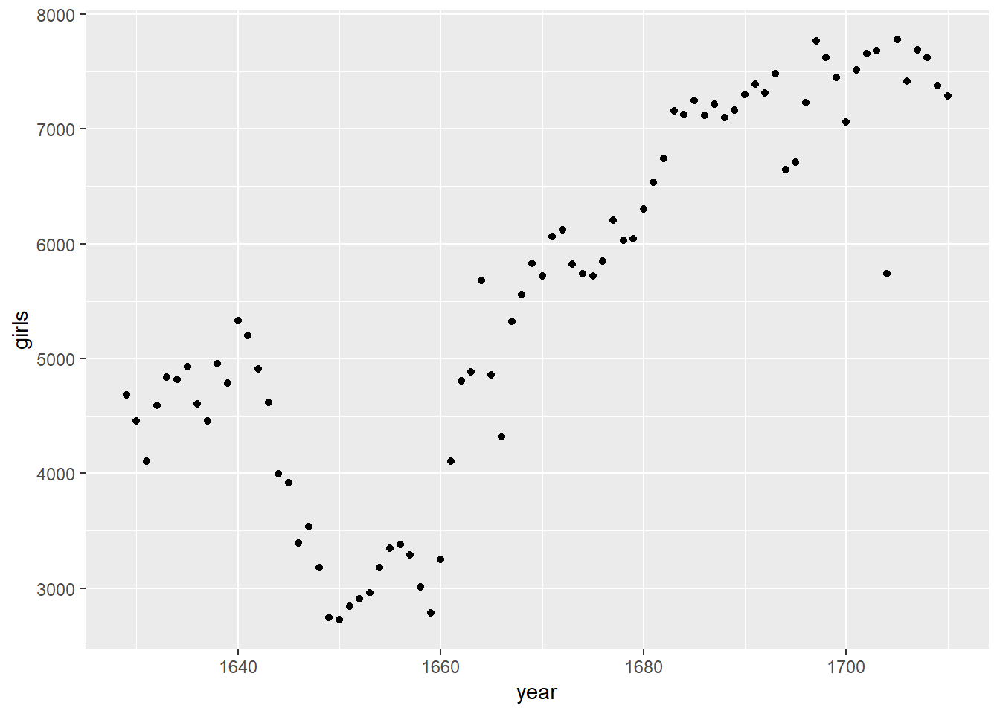
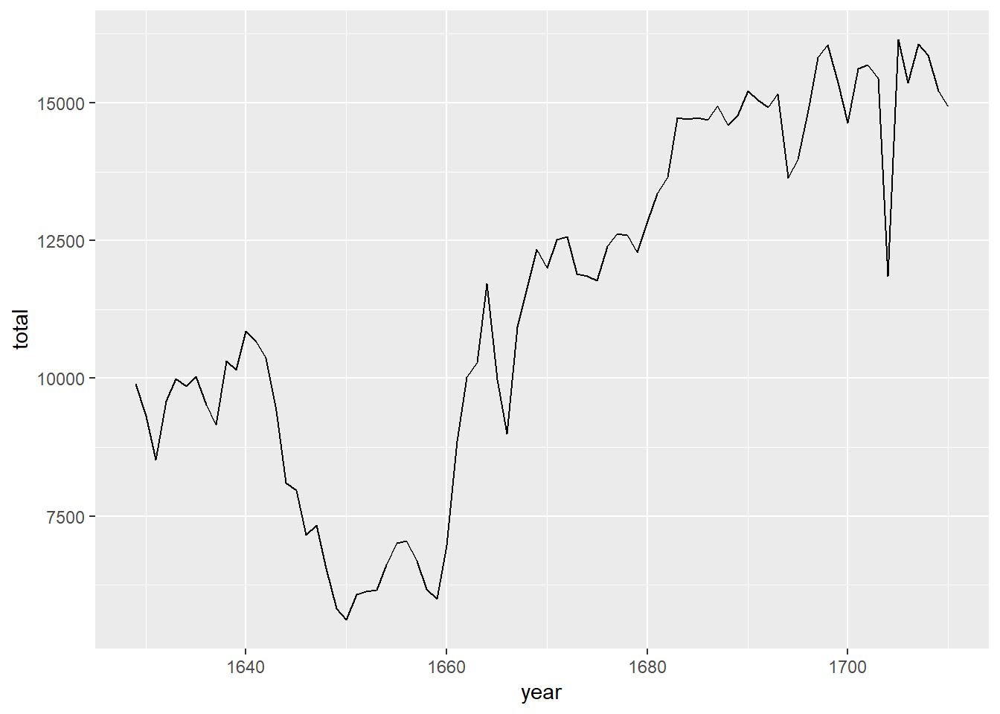
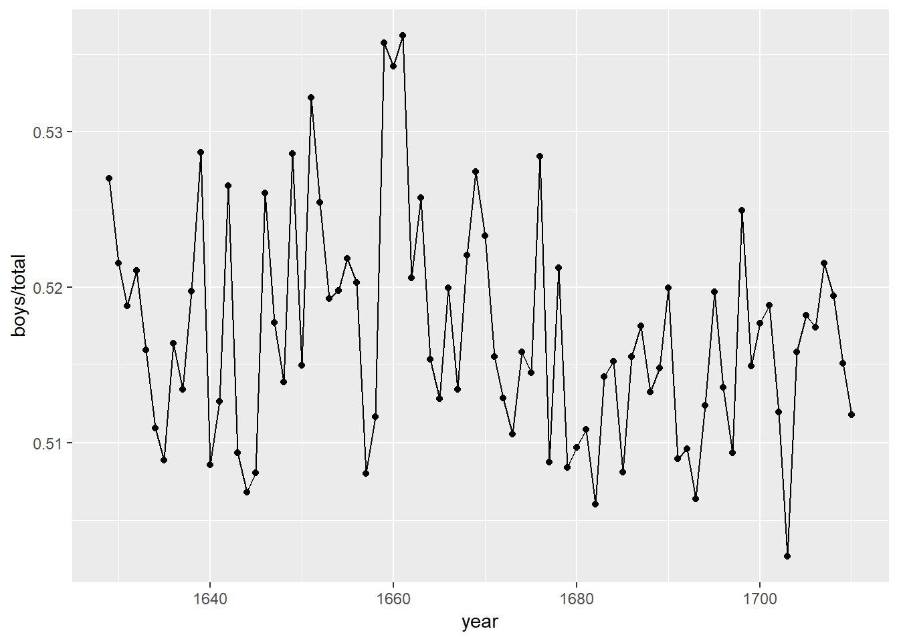
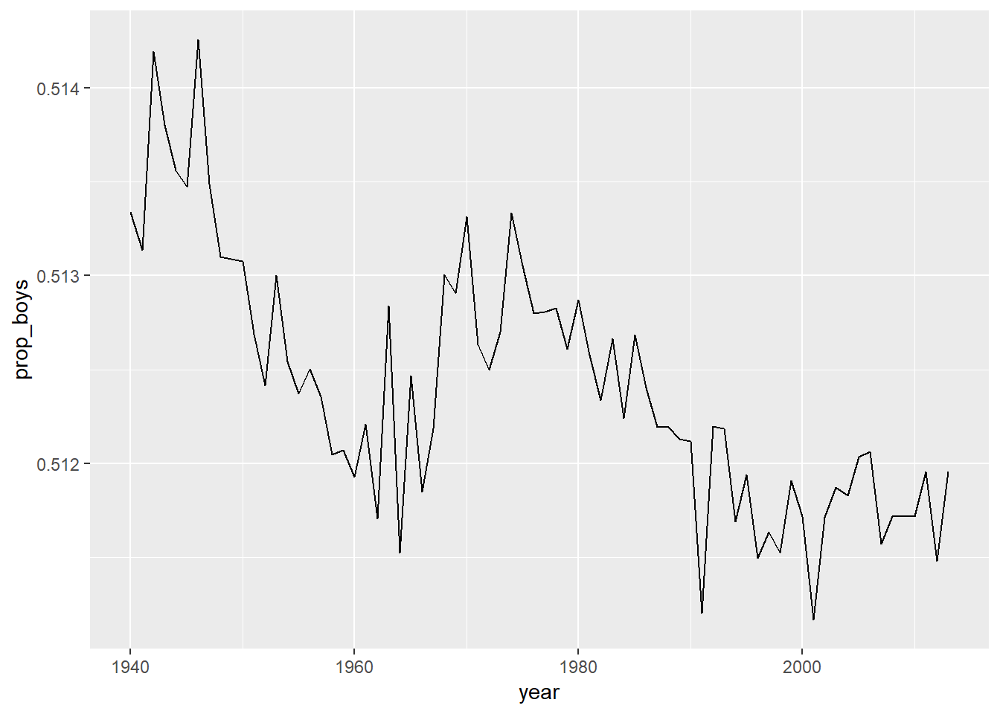
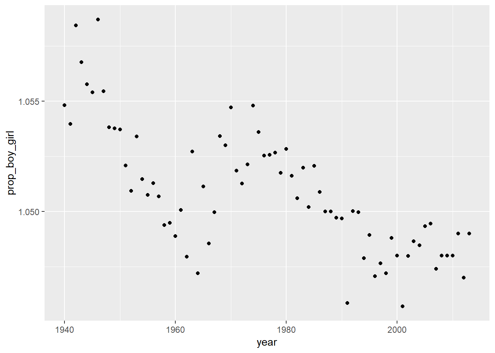

Week 1
0.1 ## Introduction to R and RStudio
title: “” output: statsr:::statswithr_lab —
Complete all Exercises, and submit answers to Questions on the Coursera platform.
The goal of this lab is to introduce you to R and RStudio, which you’ll be using throughout the course both to learn the statistical concepts discussed in the course and to analyze real data and come to informed conclusions. To straighten out which is which: R is the name of the programming language itself and RStudio is a convenient interface.
As the labs progress, you are encouraged to explore beyond what the labs dictate; a willingness to experiment will make you a much better programmer. Before we get to that stage, however, you need to build some basic fluency in R. Today we begin with the fundamental building blocks of R and RStudio: the interface, reading in data, and basic commands.
0.2 RStudio
Your RStudio window has four panels.
Your R Markdown file (this document) is in the upper left panel.
The panel on the lower left is where the action happens. It’s called the console. Everytime you launch RStudio, it will have the same text at the top of the console telling you the version of R that you’re running. Below that information is the prompt. As its name suggests, this prompt is really a request, a request for a command. Initially, interacting with R is all about typing commands and interpreting the output. These commands and their syntax have evolved over decades (literally) and now provide what many users feel is a fairly natural way to access data and organize, describe, and invoke statistical computations.
The panel in the upper right contains your workspace as well as a history of the commands that you’ve previously entered.
Any plots that you generate will show up in the panel in the lower right corner. This is also where you can browse your files, access help, manage packages, etc.
0.3 R Packages
R is an open-source programming language, meaning that users can contribute packages that make our lives easier, and we can use them for free. For this lab, and many others in the future, we will use the following R packages:
statsr: for data files and functions used in this coursedplyr: for data wranglingggplot2: for data visualization
You should have already installed these packages using commands like install.packages and install_github.
Next, you need to load the packages in your working environment. We do this with the library function. Note that you only need to install packages once, but you need to load them each time you relaunch RStudio.
library(dplyr)
library(ggplot2)
library(statsr)To do so, you can
- click on the green arrow at the top of the code chunk in the R Markdown (Rmd) file, or
- highlight these lines, and hit the Run button on the upper right corner of the pane, or
- type the code in the console.
Going forward you will be asked to load any relevant packages at the beginning of each lab.
0.4 Dataset 1: Dr. Arbuthnot’s Baptism Records
To get you started, run the following command to load the data.
data(arbuthnot)To do so, once again, you can
- click on the green arrow at the top of the code chunk in the R Markdown (Rmd) file, or
- put your cursor on this line, and hit the Run button on the upper right corner of the pane, or
- type the code in the console.
This command instructs R to load some data. The Arbuthnot baptism counts for boys and girls. You should see that the workspace area in the upper righthand corner of the RStudio window now lists a data set called arbuthnot that has 82 observations on 3 variables. As you interact with R, you will create a series of objects. Sometimes you load them as we have done here, and sometimes you create them yourself as the byproduct of a computation or some analysis you have performed.
The Arbuthnot data set refers to Dr. John Arbuthnot, an 18th century physician, writer, and mathematician. He was interested in the ratio of newborn boys to newborn girls, so he gathered the baptism records for children born in London for every year from 1629 to 1710. We can take a look at the data by typing its name into the console.
arbuthnot## # A tibble: 82 x 3
## year boys girls
## <int> <int> <int>
## 1 1629 5218 4683
## 2 1630 4858 4457
## 3 1631 4422 4102
## 4 1632 4994 4590
## 5 1633 5158 4839
## 6 1634 5035 4820
## 7 1635 5106 4928
## 8 1636 4917 4605
## 9 1637 4703 4457
## 10 1638 5359 4952
## # ... with 72 more rowsHowever printing the whole dataset in the console is not that useful. One advantage of RStudio is that it comes with a built-in data viewer. Click on the name arbuthnot in the Environment pane (upper right window) that lists the objects in your workspace. This will bring up an alternative display of the data set in the Data Viewer (upper left window). You can close the data viewer by clicking on the x in the upper lefthand corner.
What you should see are four columns of numbers, each row representing a different year: the first entry in each row is simply the row number (an index we can use to access the data from individual years if we want), the second is the year, and the third and fourth are the numbers of boys and girls baptized that year, respectively. Use the scrollbar on the right side of the console window to examine the complete data set.
Note that the row numbers in the first column are not part of Arbuthnot’s data. R adds them as part of its printout to help you make visual comparisons. You can think of them as the index that you see on the left side of a spreadsheet. In fact, the comparison to a spreadsheet will generally be helpful. R has stored Arbuthnot’s data in a kind of spreadsheet or table called a data frame.
You can see the dimensions of this data frame by typing:
dim(arbuthnot)## [1] 82 3This command should output [1] 82 3, indicating that there are 82 rows and 3 columns (we’ll get to what the [1] means in a bit), just as it says next to the object in your workspace. You can see the names of these columns (or variables) by typing:
names(arbuthnot)## [1] "year" "boys" "girls"- How many variables are included in this data set?
- 2
- 3
- 4
- 82
- 1710
Exercise: What years are included in this dataset? Hint: Take a look at the year variable in the Data Viewer to answer this question.
You should see that the data frame contains the columns year, boys, and girls. At this point, you might notice that many of the commands in R look a lot like functions from math class; that is, invoking R commands means supplying a function with some number of arguments. The dim and names commands, for example, each took a single argument, the name of a data frame.
Tip: If you use the up and down arrow keys, you can scroll through your previous commands, your so-called command history. You can also access it by clicking on the history tab in the upper right panel. This will save you a lot of typing in the future.
0.4.1 R Markdown
So far we asked you to type your commands in the console. The console is a great place for playing around with some code, however it is not a good place for documenting your work. Working in the console exclusively makes it difficult to document your work as you go, and reproduce it later.
R Markdown is a great solution for this problem. And, you already have worked with an R Markdown document – this lab! Going forward type the code for the questions in the code chunks provided in the R Markdown (Rmd) document for the lab, and Knit the document to see the results.
0.4.2 Some Exploration
Let’s start to examine the data a little more closely. We can access the data in a single column of a data frame separately using a command like
arbuthnot$boys## [1] 5218 4858 4422 4994 5158 5035 5106 4917 4703 5359 5366 5518 5470 5460
## [15] 4793 4107 4047 3768 3796 3363 3079 2890 3231 3220 3196 3441 3655 3668
## [29] 3396 3157 3209 3724 4748 5216 5411 6041 5114 4678 5616 6073 6506 6278
## [43] 6449 6443 6073 6113 6058 6552 6423 6568 6247 6548 6822 6909 7577 7575
## [57] 7484 7575 7737 7487 7604 7909 7662 7602 7676 6985 7263 7632 8062 8426
## [71] 7911 7578 8102 8031 7765 6113 8366 7952 8379 8239 7840 7640This command will only show the number of boys baptized each year. The dollar sign basically says “go to the data frame that comes before me, and find the variable that comes after me”.
- What command would you use to extract just the counts of girls born?
-
arbuthnot$boys -
arbuthnot$girls -
girls -
arbuthnot[girls] -
$girls
-
# type your code for the Question 2 here, and Knit
arbuthnot$girls## [1] 4683 4457 4102 4590 4839 4820 4928 4605 4457 4952 4784 5332 5200 4910
## [15] 4617 3997 3919 3395 3536 3181 2746 2722 2840 2908 2959 3179 3349 3382
## [29] 3289 3013 2781 3247 4107 4803 4881 5681 4858 4319 5322 5560 5829 5719
## [43] 6061 6120 5822 5738 5717 5847 6203 6033 6041 6299 6533 6744 7158 7127
## [57] 7246 7119 7214 7101 7167 7302 7392 7316 7483 6647 6713 7229 7767 7626
## [71] 7452 7061 7514 7656 7683 5738 7779 7417 7687 7623 7380 7288Notice that the way R has printed these data is different. When we looked at the complete data frame, we saw 82 rows, one on each line of the display. These data are no longer structured in a table with other variables, so they are displayed one right after another. Objects that print out in this way are called vectors; they represent a set of numbers. R has added numbers in [brackets] along the left side of the printout to indicate locations within the vector. For example, in the arbuthnot$boys vector, 5218 follows [1], indicating that 5218 is the first entry in the vector. And if [43] starts a line, then that would mean the first number on that line would represent the 43rd entry in the vector.
R has some powerful functions for making graphics. We can create a simple plot of the number of girls baptized per year with the command
ggplot(data = arbuthnot, aes(x = year, y = girls)) +
geom_point()
Before we review the code for this plot, let’s summarize the trends we see in the data.
- Which of the following best describes the number of girls baptised over the years included in this dataset?
- There appears to be no trend in the number of girls baptised from 1629 to 1710.
- There is initially an increase in the number of girls baptised, which peaks around 1640. After 1640 there is a decrease in the number of girls baptised, but the number begins to increase again in 1660. Overall the trend is an increase in the number of girls baptised.
- There is initially an increase in the number of girls baptised. This number peaks around 1640 and then after 1640 the number of girls baptised decreases.
- The number of girls baptised has decreased over time.
- There is an initial increase in the number of girls baptised but this number appears to level around 1680 and not change after that time point.
Back to the code… We use the ggplot() function to build plots. If you run the plotting code in your console, you should see the plot appear under the Plots tab of the lower right panel of RStudio. Notice that the command above again looks like a function, this time with arguments separated by commas.
- The first argument is always the dataset.
- Next, we provide thevariables from the dataset to be assigned to
aesthetic elements of the plot, e.g. the x and the y axes. - Finally, we use another layer, separated by a
+to specify thegeometric object for the plot. Since we want to scatterplot, we usegeom_point.
You might wonder how you are supposed to know the syntax for the ggplot function. Thankfully, R documents all of its functions extensively. To read what a function does and learn the arguments that are available to you, just type in a question mark followed by the name of the function that you’re interested in. Try the following in your console:
#?ggplotNotice that the help file replaces the plot in the lower right panel. You can toggle between plots and help files using the tabs at the top of that panel.
More extensive help for plotting with the ggplot2 package can be found at http://docs.ggplot2.org/current/. The best (and easiest) way to learn the syntax is to take a look at the sample plots provided on that page, and modify the code bit by bit until you get achieve the plot you want.
0.4.3 R as a big calculator
Now, suppose we want to plot the total number of baptisms. To compute this, we could use the fact that R is really just a big calculator. We can type in mathematical expressions like
5218 + 4683## [1] 9901to see the total number of baptisms in 1629. We could repeat this once for each year, but there is a faster way. If we add the vector for baptisms for boys to that of girls, R will compute all sums simultaneously.
arbuthnot$boys + arbuthnot$girls## [1] 9901 9315 8524 9584 9997 9855 10034 9522 9160 10311 10150
## [12] 10850 10670 10370 9410 8104 7966 7163 7332 6544 5825 5612
## [23] 6071 6128 6155 6620 7004 7050 6685 6170 5990 6971 8855
## [34] 10019 10292 11722 9972 8997 10938 11633 12335 11997 12510 12563
## [45] 11895 11851 11775 12399 12626 12601 12288 12847 13355 13653 14735
## [56] 14702 14730 14694 14951 14588 14771 15211 15054 14918 15159 13632
## [67] 13976 14861 15829 16052 15363 14639 15616 15687 15448 11851 16145
## [78] 15369 16066 15862 15220 14928What you will see are 82 numbers (in that packed display, because we aren’t looking at a data frame here), each one representing the sum we’re after. Take a look at a few of them and verify that they are right.
0.4.4 Adding a new variable to the data frame
We’ll be using this new vector to generate some plots, so we’ll want to save it as a permanent column in our data frame.
arbuthnot <- arbuthnot %>%
mutate(total = boys + girls)What in the world is going on here? The %>% operator is called the piping operator. Basically, it takes the output of the current line and pipes it into the following line of code.
A note on piping: Note that we can read these three lines of code as the following:
“Take the arbuthnot dataset and pipe it into the mutate function. Using this mutate a new variable called total that is the sum of the variables called boys and girls. Then assign this new resulting dataset to the object called arbuthnot, i.e. overwrite the old arbuthnot dataset with the new one containing the new variable.”
This is essentially equivalent to going through each row and adding up the boys and girls counts for that year and recording that value in a new column called total.
Where is the new variable? When you make changes to variables in your dataset, click on the name of the dataset again to update it in the data viewer.
You’ll see that there is now a new column called total that has been tacked on to the data frame. The special symbol <- performs an assignment, taking the output of one line of code and saving it into an object in your workspace. In this case, you already have an object called arbuthnot, so this command updates that data set with the new mutated column.
We can make a plot of the total number of baptisms per year with the following command.
ggplot(data = arbuthnot, aes(x = year, y = total)) +
geom_line()
Note that using geom_line() instead of geom_point() results in a line plot instead of a scatter plot. You want both? Just layer them on:
ggplot(data = arbuthnot, aes(x = year, y = total)) +
geom_line() +
geom_point()Exercise: Now, generate a plot of the proportion of boys born over time. What do you see?
ggplot(data = arbuthnot, aes(x = year, y = boys/total)) + geom_line() + geom_point()
Finally, in addition to simple mathematical operators like subtraction and division, you can ask R to make comparisons like greater than, >, less than, <, and equality, ==. For example, we can ask if boys outnumber girls in each year with the expression
arbuthnot <- arbuthnot %>%
mutate(more_boys = boys > girls)This command add a new variable to the arbuthnot data frame containing the values of either TRUE if that year had more boys than girls, or FALSE if that year did not (the answer may surprise you). This variable contains different kind of data than we have considered so far. All other columns in the arbuthnot data frame have values are numerical (the year, the number of boys and girls). Here, we’ve asked R to create logical data, data where the values are either TRUE or FALSE. In general, data analysis will involve many different kinds of data types, and one reason for using R is that it is able to represent and compute with many of them.
0.5 Dataset 2: Present birth records
In the previous few pages, you recreated some of the displays and preliminary analysis of Arbuthnot’s baptism data. Next you will do a similar analysis, but for present day birth records in the United States. Load up the present day data with the following command.
data(present)The data are stored in a data frame called present which should now be loaded in your workspace.
- How many variables are included in this data set?
- 2
- 3
- 4
- 74
- 2013
dim(present)## [1] 74 3Exercise: What years are included in this dataset? Hint: Use the range function and present$year as its argument.
range(present$year)## [1] 1940 2013- Calculate the total number of births for each year and store these values in a new variable called
totalin thepresentdataset. Then, calculate the proportion of boys born each year and store these values in a new variable calledprop_boysin the same dataset. Plot these values over time and based on the plot determine if the following statement is true or false: The proportion of boys born in the US has decreased over time.- True
- False
# type your code for Question 5 here, and Knit
present <- present %>%
mutate(total = boys + girls)
present <- present %>%
mutate(prop_boys = (boys/total))
ggplot(data = present, aes(x = year, y = prop_boys)) + geom_line()
- Create a new variable called
more_boyswhich contains the value of eitherTRUEif that year had more boys than girls, orFALSEif that year did not. Based on this variable which of the following statements is true?- Every year there are more girls born than boys.
- Every year there are more boys born than girls.
- Half of the years there are more boys born, and the other half more girls born.
# type your code for Question 6 here, and Knit
present <- present %>%
mutate(more_boys = boys > girls)- Calculate the boy-to-girl ratio each year, and store these values in a new variable called
prop_boy_girlin thepresentdataset. Plot these values over time. Which of the following best describes the trend?- There appears to be no trend in the boy-to-girl ratio from 1940 to 2013.
- There is initially an increase in boy-to-girl ratio, which peaks around 1960. After 1960 there is a decrease in the boy-to-girl ratio, but the number begins to increase in the mid 1970s.
- There is initially a decrease in the boy-to-girl ratio, and then an increase between 1960 and 1970, followed by a decrease.
- The boy-to-girl ratio has increased over time.
- There is an initial decrease in the boy-to-girl ratio born but this number appears to level around 1960 and remain constant since then.
# type your code for Question 7 here, and Knit
present <- present %>%
mutate(prop_boy_girl = boys/girls)
ggplot(data = present, aes (x = year, y = prop_boy_girl)) + geom_point()
- In what year did we see the most total number of births in the U.S.? Hint: Sort your dataset in descending order based on the
totalcolumn. You can do this interactively in the data viewer by clicking on the arrows next to the variable names. Or to arrange the data in a descenting order with new function:descr(for descending order).- 1940
- 1957
- 1961
- 1991
- 2007
# type your code for Question 8 here
# sample code is provided below, edit as necessary, uncomment, and then Knit
present %>%
mutate(total = boys +girls) %>%
arrange(desc(total))## # A tibble: 74 x 7
## year boys girls total prop_boys more_boys prop_boy_girl
## <dbl> <dbl> <dbl> <dbl> <dbl> <lgl> <dbl>
## 1 2007 2208071 2108162 4316233 0.512 TRUE 1.05
## 2 1961 2186274 2082052 4268326 0.512 TRUE 1.05
## 3 2006 2184237 2081318 4265555 0.512 TRUE 1.05
## 4 1960 2179708 2078142 4257850 0.512 TRUE 1.05
## 5 1957 2179960 2074824 4254784 0.512 TRUE 1.05
## 6 2008 2173625 2074069 4247694 0.512 TRUE 1.05
## 7 1959 2173638 2071158 4244796 0.512 TRUE 1.05
## 8 1958 2152546 2051266 4203812 0.512 TRUE 1.05
## 9 1962 2132466 2034896 4167362 0.512 TRUE 1.05
## 10 1956 2133588 2029502 4163090 0.513 TRUE 1.05
## # ... with 64 more rows0.6 Resources for learning R and working in RStudio
That was a short introduction to R and RStudio, but we will provide you with more functions and a more complete sense of the language as the course progresses. You might find the following tips and resources helpful.
In this course we will be using the
dplyr(for data wrangling) andggplot2(for data visualization) extensively. If you are googling for R code, make sure to also include these package names in your search query. For example, instead of googling “scatterplot in R”, google “scatterplot in R with ggplot2”.- The following cheathseets may come in handy throughout the course. Note that some of the code on these cheatsheets may be too advanced for this course, however majority of it will become useful as you progress through the course material.
While you will get plenty of exercise working with these packages in the labs of this course, if you would like further opportunities to practice we recommend checking out the relevant courses at DataCamp.
This is a derivative of an OpenIntro lab, and is released under a Attribution-NonCommercial-ShareAlike 3.0 United States license.